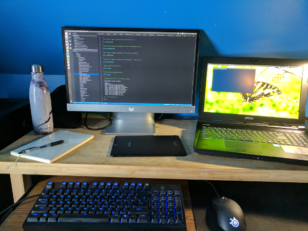

I moved from Windows to Linux at the end of 2007, roughly ten years ago. I did many of the crazy things new users do, from Gentoo to Arch, but mostly used Fedora and Ubuntu.
I thought ten years was worth writing about... but honestly, the big thing to write about may be that there's little to write about. I installed Linux on roughly a dozen machines in 2016 (my machines, plus some owned by friends and family). The only issue I remember is having to install Ubuntu server on my desktop computer because the graphical installer couldn't work with my the GTX 1080. I installed the server version, then NVIDIA's drivers, then the graphical interface, et voilà... A few days ago I completely removed Windows from an MSI laptop (yeppie, GTX 1070 GPU!). It just works.
Linux is boring in a very nice, productivity-friendly way. Almost everything I need, from Cuda 8 to compilers and librairies, can be installed with a simple 'sudo apt install'. It's probably not for everyone, but for machine learning research I cannot imagine a better platform.
